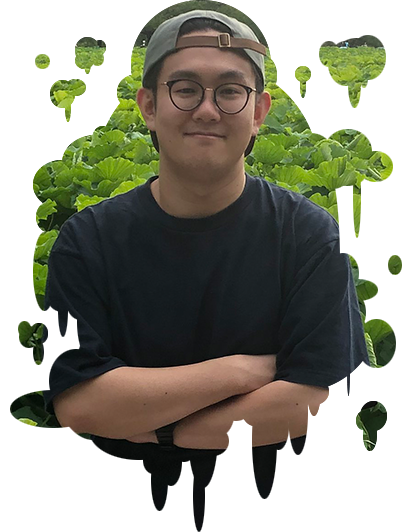

About

| 名前 | 藤本 大三郎 |
|---|---|
| 生年月日 | 1993年8月17日 |
| 血液型 | O型 |
| 経歴 | 大学卒業後、害虫駆除の仕事に従事していました。 2年半勤務した後、ウェブの業界に興味を持ちウェブスクールに通い始め、ウェブ業界へ転職をいたしました。 現在、富士ゼロックスのサイト運用を行っております。 |
| 資格 | 色彩検定2級 |
| 趣味 | ブレイクダンス、読書 |
Skill
HTML
webスクールで半年ほど学び、その後実務で1年半ほどの経験があります。
常駐のサイト運用の業務では、CMSでのページ更新、作成にHTMLを使用しております。
CSS
webスクールで半年ほど学びました。
例外対応のページや、サイト改修での仕様の変更のためにスタイル調整などを行っております。
その他、通常のサイト運用以外のページのスタイル修正、レスポンシブ化などを行っております。
Javascript

webスクールで半年ほど学びました。
業務では、CMSでついてしまうスタイルを消すなどの軽微な実装は行いました。
運用サイト改修時に、新しいコードと既存コードの調整なども行っております。
バナー作成・画像加工
photoshopやillustratorを用いて、バナー作成や、写真の軽微なレタッチなどは通常業務で行っております。